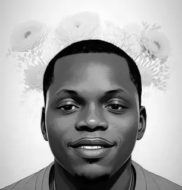

about me
My name is Kayode David Adebanjo. I'm a 25-year-old individual from Ogun State Nigeria with a strong aspiration to become a skilled backend developer. Currently, I am enrolled at Altschool Africa, where I am actively pursuing my educational journey. My Altschool ID is [ALT/SOE/023/2308]. I have chosen to be a part of Altschool Africa to harness the knowledge and skills necessary to excel in the field of backend development. My goal within Altschool Africa is to gain a deep understanding of programming, databases, server-side technologies, and everything it takes to build robust and efficient backend systems. I am committed to honing my abilities and leveraging this education to make a meaningful impact in the world of technology. I am excited about the opportunities that Altschool Africa provides and look forward to the achievements and experiences that lie ahead on my journey to becoming a proficient backend developer.
Kayode
To join me at Altschool Africa click the registration button below